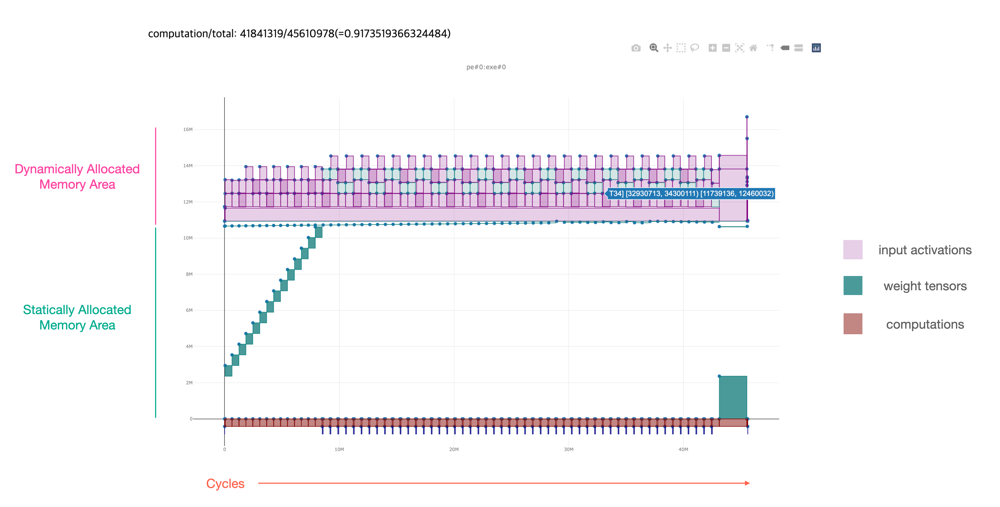
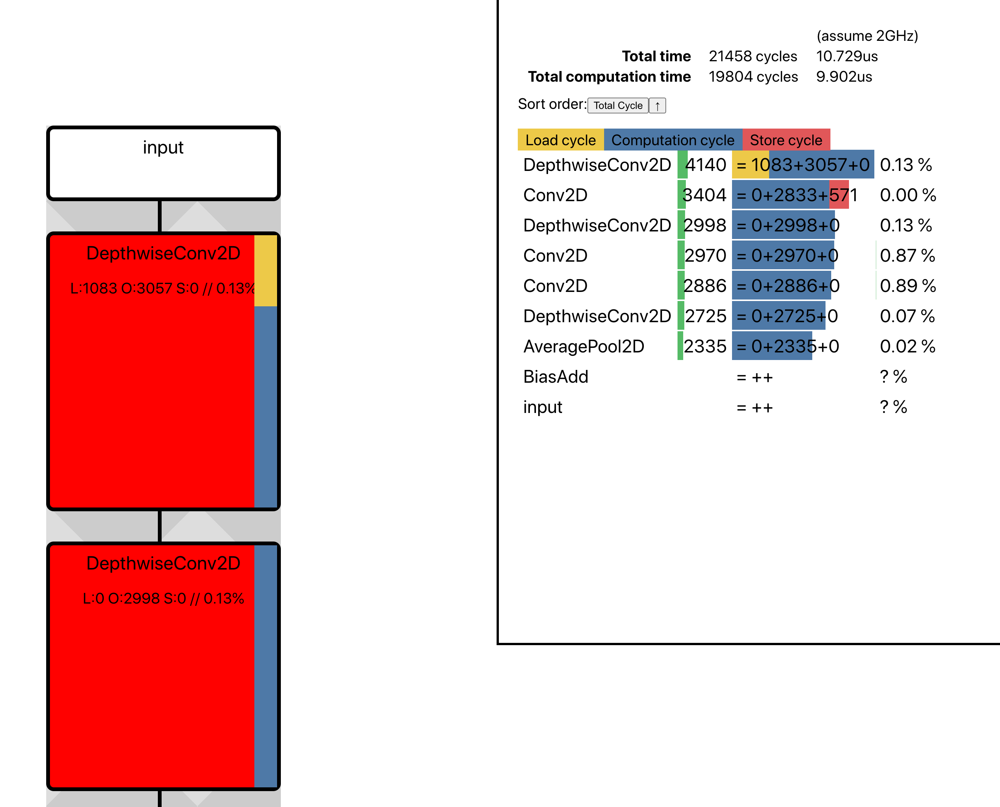

커맨드 라인 도구 빠르게 시작하기¶
FuriosaAI SDK는 모델 컴파일 및 최적화, 모델 양자화를 돕는 다양한 커맨드 라인 도구를 제공한다.
일부 명령줄 도구는 FuriosaAI의 웹서비스를 기반으로 동작한다. 따라서 모든 기능 사용을 위해 API 키를 설정해야 한다. 아직 키 설정을 하지 않았다면 API 키 설정 를 참고한다.
설치¶
커맨드 라인 도구 설치
$ pip install furiosa-sdk[cli, validator]
설치 확인
$ furiosa version
Server version: 0.2.0 (rev: a4bbbb1b4 built_at: 2021-03-15T21:20:59Z)
Client version: 0.1.0
명령어 소개¶
툴체인 버전 확인¶
toolchain 커맨드는 툴체인 관련된 부가 기능을 제공한다.
현재는 제공되는 툴체인들의 버전 출력 기능을 제공한다.
$ furiosa toolchain list
Available Toolchains:
[0] 0.1.0 (rev: 952707e5f built_at: 2020-12-15 23:38:22)
모델 컴파일¶
compile 커맨드는 tflite, onnx
포맷의 모델을 컴파일하여 FuriosaAI NPU를 사용하는 프로그램을 생성한다.
$ furiosa compile \
test_data/MNISTnet_uint8_quant_without_softmax.tflite
output.enf has been generated (elapsed: 513.661 ms)
-o 옵션은 생성하는 프로그램 바이너리의 저장 위치를 지정한다.
$ furiosa compile \
MNISTnet_uint8_quant_without_softmax.tflite \
-o /tmp/mnist.enf
mnist.enf has been generated (elapsed: 513.661 ms)
--conf 옵션을 통해 다양한 컴파일러 옵션을 yaml 파일로 지정할 수 있다.
$ furiosa compile \
test_data/MNISTnet_uint8_quant_without_softmax.tflite \
--config test_data/compiler_config.yml
outout.enf has been generated (elapsed: 513.661 ms)
모델 적합 여부 검사¶
validate 커맨드는 tflite, onnx
포맷의 모델을 받아 자동으로 quantization 하고 이어서 최종 바이너리까지 컴파일을 시도한다.
성공하면 Furiosa NPU에서 실행 가능한 모델이다.
$ furiosa validate yolov4.onxx
Passed!
$ furiosa validate efficientnet-lite4-11.onnx
Failed. The result has been written to validation.txt
$ cat validation.txt
Stdout:
[Step 1] Checking if the model can be transformed into a quantized model ...
Stderr:
/root/miniconda3/envs/furiosa/lib/python3.8/site-packages/onnx/__init__.py:97: RuntimeWarning: Unexpected end-group tag: Not all data was converted
decoded = cast(Optional[int], proto.ParseFromString(s))
[Step 1] Failed
컴파일 분석 및 최적화 도구¶
컴파일 과정에 추가 옵션 주거나 별도의 명령을 통해 컴파일된 모델의 NPU 활용 정도와 모델 컴파일에 대한 정보를 제공하는 리포트를 생성할 수 있다.
compile 커맨드에 --mem-allow-report 옵션을 주는 경우
메모리 할당에 대한 리포트를 출력해볼 수 있다.
출력되는 리포트의 포맷은 HTML 이다.
$ furiosa compile \
MNISTnet_uint8_quant_without_softmax.tflite \
-o /tmp/mnist.enf \
--mem-alloc-report ./mem-report.html
아래 그림은 메모리 할당 리포트 출력 예제이다.
perfeye 커맨드는
모델을 분석해 컴파일된 모델의 NPU 활용도를
연산자 단위로 예상하여 출력한다.
$ furiosa perfeye \
MNISTnet_uint8_quant_without_softmax.tflite \
-o output.html
output.html has been generated (elapsed: 510.783 ms)
아래 그림은 perfeye 리포트의 예제이다.
